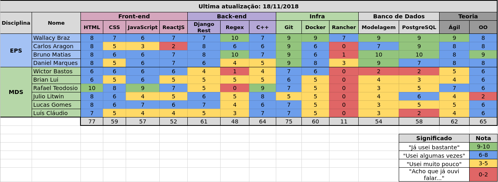

Sprint 13
Histórico da Revisão
| Data | Versão | Descrição | Autor |
|---|---|---|---|
| 14/11/2018 | 0.1 | Planejamento da sprint | Daniel Marques |
| 19/11/2018 | 1.0 | Resultado da sprint | Daniel Marques |
1. Introdução
Número da Sprint: 10
Data de Início: 14/11/2018
Data de Término: 19/11/2018
Duração: 6 dias
Pontos Adicionados (Dívida): 41
2. Papéis
Scrum Master: * Daniel Marques
Product Owner: * Carlos Aragon
Arquiteto: * Bruno Matias
DevOps: * Francisco Wallacy
Desenvolvedores: Brian Lui Julio Litwin Lucas Gomes Luís Cláudio Rafael Teodósio Wictor Girardi
3. Histórias Adicionadas (Dívida)
3.1. EP03FE07TS26 - Implementar modal de criar Funcionário e Nota Fiscal (3 pontos)
3.1.1. Descrição
Eu, como desenvolvedor, desejo implementar duas modals, uma para criar Funcionário e outra para criar Nota Fiscal.
3.1.2. Critério de Aceitação
- Deve ter um botão que ao clicar aparece a modal com o respectivo formulário
- A modal deve estar centralizada na tela
- Ao clicar fora a modal deve desaparecer
3.1.3. Responsáveis
- Lucas Gomes
- Daniel Marques
3.2. EP02FE09TS27 - Adicionar mydatabase ao repositório (1 pontos)
3.2.1. Descrição
Eu, como desenvolvedor desejo adicionar o arquivo mydatabase para o metabase ter as migrations do banco de dados SQLite como base.
3.2.2. Critério de Aceitação
- O arquivo não deve ter nenhuma tupla populada.
- Deve ter somente as tabelas criadas.
3.2.3. Responsáveis
- Daniel Marques
3.3. EP01FE04TS28 - Adicionar Autenticação no Worker Post (5 pontos)
3.3.1. Descrição
Eu, como desenvolvedor, desejo implementar adicionar autenticação no Worker Post.
3.3.2. Critério de Aceitação
- Ao criar um funcionário deve-se criar um usuário
3.3.3. Responsáveis
- Brian Lui
- Bruno Matias
- Lucas Gomes
- Wictor Girardi
3.4. TS29 - Corrigir página Visualizar Nota Fiscal (3 pontos)
3.4.1. Descrição
O link não redireciona para a página esperada e ao acessar a página diretamente pela url, as informações não são carregadas.
Etapas para reproduzir o comportamento 1. Vá até o menu lateral; 2. Clicar no ícone "Listar Notas Fiscais" 3. Clicar no ícone de "Visualizar"
Comportamento esperado: Era esperado que o site fosse redirecionado para a página de visualização da nota fiscal e ao acessar através da url, a página não mostra nenhuma informação referente a nota fiscal.
3.4.2. Responsáveis
- Lucas Gomes
4. Presença no Sprint Planning
| Presente | Membro |
|---|---|
| S | Brian Lui |
| S | Bruno Matias |
| N | Carlos Aragon |
| S | Daniel Marques |
| N | Francisco Wallacy |
| S | Julio Litwin |
| S | Lucas Gomes |
| S | Luís Cláudio |
| S | Rafael Teodósio |
| S | Wictor Girardi |
5. Resultado
| ID | História | Status | Pontos |
|---|---|---|---|
| EP03FE07TS26 | Implementar modal de criar Funcionário e Nota Fiscal | Concluído | 3 |
| EP02FE09TS27 | Adicionar mydatabase ao repositório | Concluído | 1 |
| EP01FE04TS28 | Adicionar Autenticação no Worker Post | Concluído | 5 |
| EP02FE02TS29 | Corrigir página Visualizar Nota Fiscal | Concluído | 3 |
| EP02FE09TS30 | Implementar gráficos com biblioteca do React | Não Concluído | 13 |
| EP02FE06TS31 | Implementar search aproximado no parser | Concluído | 8 |
| EP03FE07TS32 | Retirar layout padrão da página de cadastro de admin e de login | Concluído | 8 |
Pontos concluídos: 31
Pontos de dívidas: 13
5.1. Burndown da Sprint

5.2. Velocity

Para visualizar a imagem ampliada, clique aqui.
5.3. Quadro de Conhecimentos

Para visualizar a imagem ampliada, clique aqui.
{kind=link}
5.4. Retrospectiva:
| Negativo | Positivo | Melhoria |
|---|---|---|
| Implementado pouca quantidade de histórias se for comparar com a sprint passada | O layout está mais acessível e padronizado | Responsabilidade com a implementação da história |
| Um integrante não tinha começado a implementar sua história a sprint inteira | O parser foi mais aprimorando ainda para ler mais tipos diferentes de PDFs | |
| A história mais importante não foi concluída, mesmo com o adiamento do fechamento da sprint | Todos os PDFs testados estão sendo lidos com sucesso pelo parser |
5.5. Retrospectiva do Scrum Master:
A sprint foi concluída com apenas uma dívida, mas era a uma das histórias mais importante da sprint, uma das justificativas foi que o integrante teve problemas de saúde na sprint, prejudicando a sua conclusão.
Uma outra história importante foi a de aprimoramento do parser. Como alguns PDFs o título era digitado de forma diferentes dos outros teve que ser implementar esse tratamento no parser. Todos os tipos de PDFs colocados para teste estão sendo lidos agora.
5.6. Presença no Sprint Review
| Presente | Membro |
|---|---|
| S | Brian Lui |
| S | Bruno Matias |
| N | Carlos Aragon |
| S | Daniel Marques |
| S | Francisco Wallacy |
| S | Julio Litwin |
| S | Lucas Gomes |
| S | Luís Cláudio |
| S | Rafael Teodósio |
| S | Wictor Girardi |